Your group designs a small randomized experiment as a survey, runs it on your classmates in class, gives feedback on other groups' experiments, and analyzes your own results. Everything happens on one site, on a laptop or a phone.
You sign in with your SIS User ID and a password you choose the first time. Your name comes from the class roster, so there's nothing to type and no typos in the data used for grading.
Go to the site and click Join Classroom, or scan the QR code shown in class. Enter the classroom code and the classroom password your instructor gave you, then click Join.
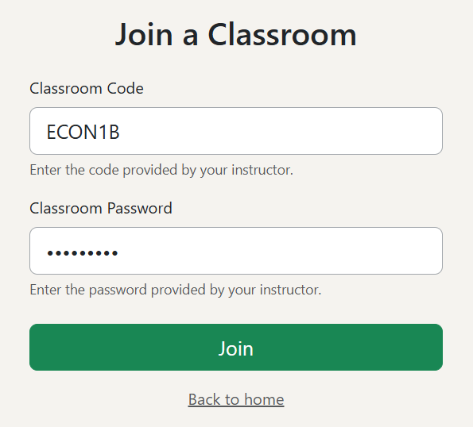
Enter your SIS User ID and click Continue.
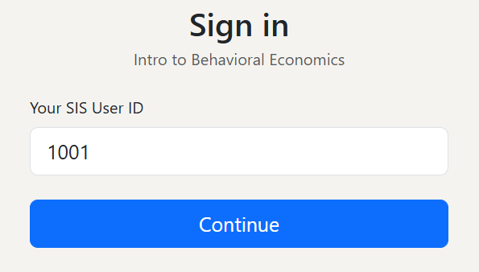
The first time, the site asks "Are you [your first name]?" Click Yes, that's me. If it shows someone else's name, click No and check your ID. Never sign in as a classmate.
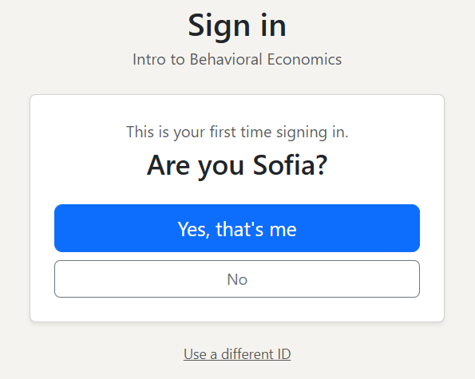
Choose a password (at least 6 characters) and type it twice. A green check shows when both match. Click Save and continue. Next time, you sign in with your SIS User ID and this password.
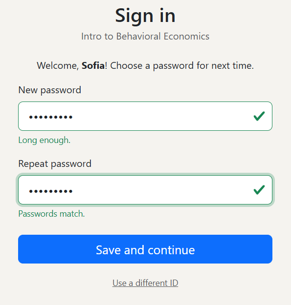
After signing in you land in your lobby. Everything you need is there, and sections appear only when they're relevant.
| Section | What it's for |
|---|---|
| Live Session | Join the surveys run in class. It shows LIVE in green when a survey is running. |
| Group invites | Invites from classmates to join their group. Accept or decline. |
| Open surveys | Surveys a group was allowed to run early. Answer them before their deadline. |
| My group | Your group's survey: members, status, warnings, number of responses and the data download. |
| Presentation order | Every group's survey, in the order they run and present in class. |
| Feedback for other groups | The groups you must comment on, and your comments. |
Only one person per group creates the survey; everyone else waits for an invite. Each student can be in one group (unless your instructor says otherwise).
One member clicks Create your group's survey in the lobby. They're added to the group automatically, and the group gets its number automatically. That number is your place in the presentation order.
Under Teammates, they start typing each classmate's name, pick it from the list and click Add. Invites can also be sent later from the survey's page, under Group Members.
The other members accept the invite in their lobby, under Group invites.
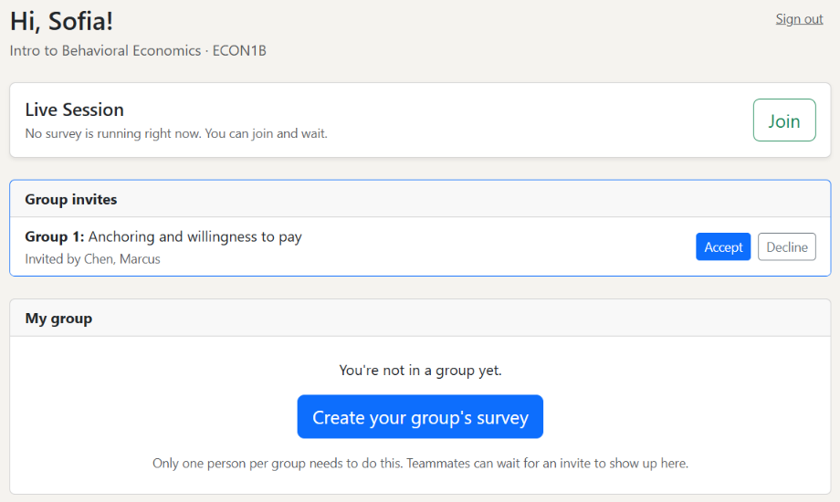
Once you accept, your group appears under My group:
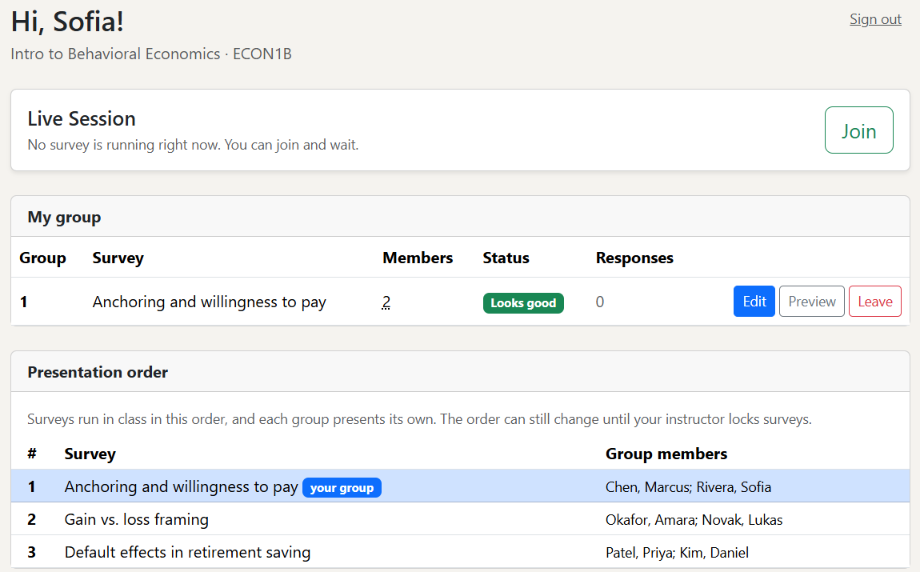
A survey is one experiment: each respondent is randomly shown one arm (control or a treatment), and the arms differ only in what you want to test.
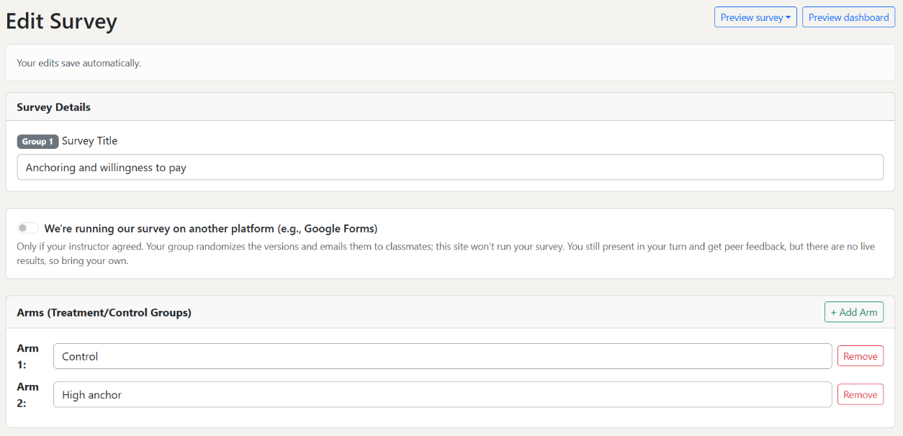
Arms (up to 4). Name them, for example "Control" and "High anchor". Each respondent sees exactly one arm, and always the same one.
Questions. Every arm has the same questions, but the wording, image and answer options can differ per arm. That difference is your treatment. Your instructor sets a maximum number of questions (shown next to Questions); short surveys get better answers.
Copy from Control. Each arm after the first has this link. It copies the first arm's text, options and image, so you only change the part that differs.
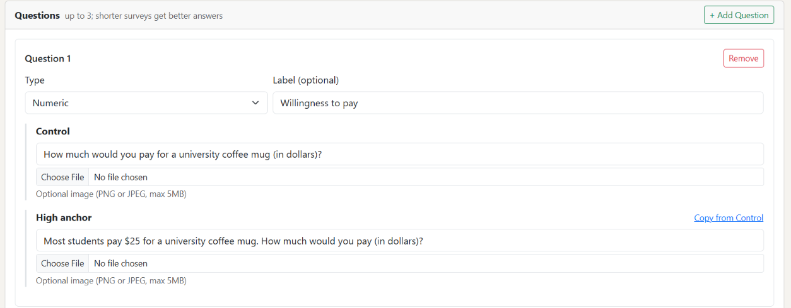
Images (PNG or JPEG, up to 5 MB) are optional, per arm and question.
Warnings. The page warns you if two arms are identical in every question, which means there's no treatment.
| Question type | Respondents see | Results show |
|---|---|---|
| Multiple choice | buttons, pick one | bar chart by arm |
| Multiple answer | buttons, pick several | bar chart by arm |
| Numeric | a number box | histogram and mean, median, SD by arm |
| Slider | a slider with your min, max and step | histogram and statistics by arm |
| Short answer | a text box (140 characters) | the answers by arm, identical ones grouped |
Example. To test anchoring: two arms, one numeric question. Control asks "How much would you pay for this mug?" The "High anchor" arm asks "Most students pay $25 for this mug. How much would you pay?"
Saving. After you create the survey, your edits save automatically: the bar at the top says when. If something's missing, it says what ("Not saved yet: Question 2 needs text"). Discard all changes from this session puts the survey back the way it was when you opened it in that tab. Teammates editing at the same time overwrite each other, so take turns.
Group members. The bottom of the survey page lists your group and lets you invite more classmates.
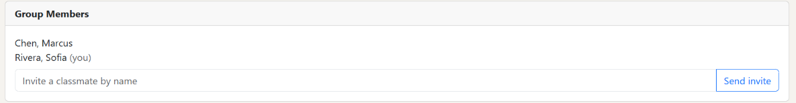
With your instructor's permission, your group can run its survey somewhere else, such as Google Forms. In that case your group randomizes the versions and emails them to classmates; this site won't run your survey.
Create your group's survey as usual (so the group and its members are registered), and give it a title.
Turn on We're running our survey on another platform. The arms and questions disappear and are no longer required.
Optionally, describe how you're running it. Classmates see this note when they give you feedback.
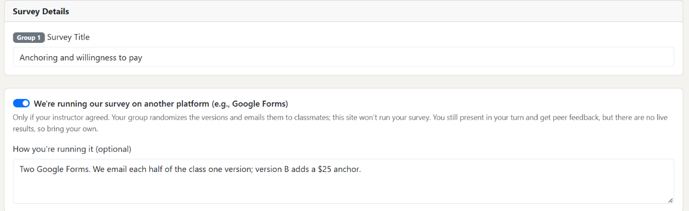
You keep your place in the presentation order, present in your turn and get peer feedback like every other group. There are no live results in class, so bring your own. Anything you'd already built here is kept: turning the switch off brings it back.
Check your survey from both sides before it's locked. Nothing you do in a preview is saved.
Preview survey (top of the survey page) shows exactly what a respondent sees on their phone, for the arm you pick. Switch arms with the buttons at the top.
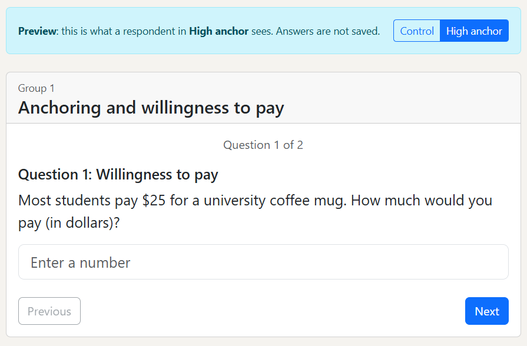
Preview dashboard shows the charts and tables that will be projected in class, filled with made-up responses. Change the sample size, or click New random sample to see how results vary.
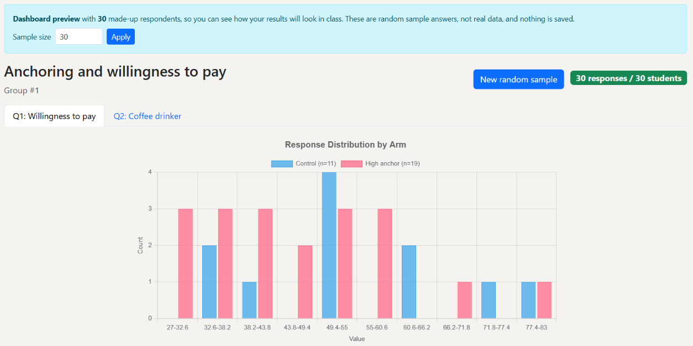
Your lobby lists every group's survey in the order they run in class, with each group's members. Your group is highlighted, so you know when you present. Groups running their survey on another platform are marked Other platform: no live results; they still present in their turn. The order can change until your instructor locks surveys.
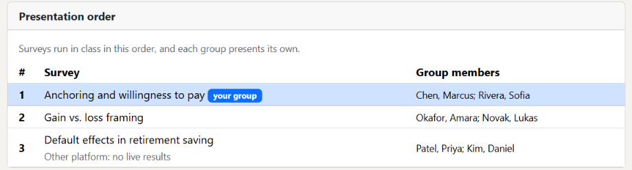
Bring a charged phone or laptop. Sign in before class starts so you're ready.
In your lobby, click Join on the Live Session card. You'll see "Waiting for the next survey".
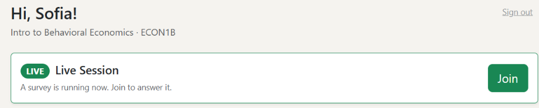
When the instructor starts a group's survey, it appears on your screen within a few seconds. Answer and click Submit All Answers.
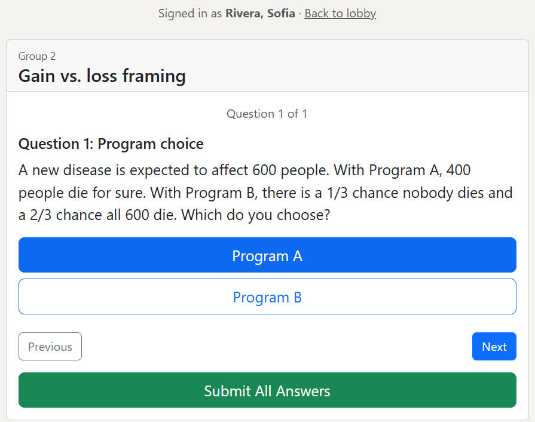
Wait for the next one. Keep the page open; there's no need to refresh.
Notes for feedback. After you submit, a small link appears: Add a note for your feedback (optional). Jot down your thoughts while they're fresh. Only you can see the note, and it becomes your draft comment for that group.
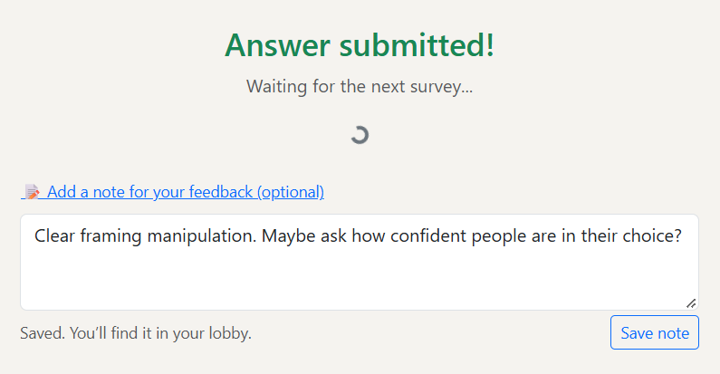
Part of your grade is commenting on other groups' experiments: at least the groups you're assigned, marked required. Groups are assigned at random so every group gets about the same number of reviewers, and never your own.
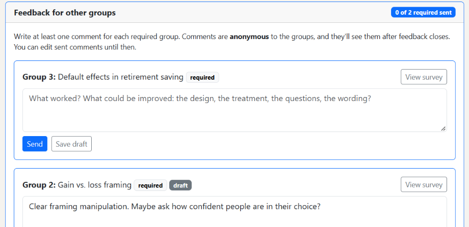
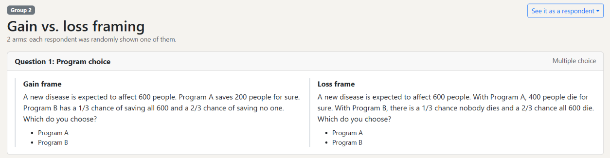
Comments are anonymous to the groups: they see "Reviewer 1, Reviewer 2", while your instructor sees names for grading. Groups read their comments only after comments close. Good comments are specific: what works, and one concrete change to the design, wording or treatment.
After your survey runs, download its responses from your lobby (the number in the Responses column) or from the bottom of the survey page. Downloads keep working after surveys are locked.
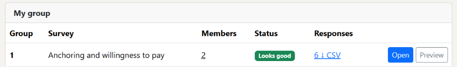
The file is a CSV that opens in Excel, Google Sheets, R or Stata, with one row per respondent:
respondent_id,arm,Q1 Willingness to pay (numeric) R-7KQ2PX,Control,8 R-M4TW9A,High anchor,20
Respondents appear only as random IDs, never by name. Compare the answers across arms: that difference is your treatment effect. The Survey Config download lists what each arm showed. Groups that ran their survey on another platform collect their own data there.
| Problem | What to do |
|---|---|
| Forgot your password | Ask your instructor to reset it. Then sign in with your ID and choose a new one. |
| "ID not found" | Check the ID. If it's right, email your instructor to be added to the roster. |
| It says "Welcome back" and asks for a password, but you never signed in | Email your instructor right away; they'll reset it. |
| Can't edit your survey | Surveys are locked (lock notice at the top), or your group submitted it early. Ask your instructor. |
| "Saving deletes responses" warning | Your survey already has answers. Download them before changing anything. |
| Survey doesn't appear in class | Wait a few seconds; the page checks every 3 seconds. If it still doesn't show, go back to the lobby and click Join again. |
| Can't accept an invite | You're already in a group. Leave it first, or ask the inviter to check. |